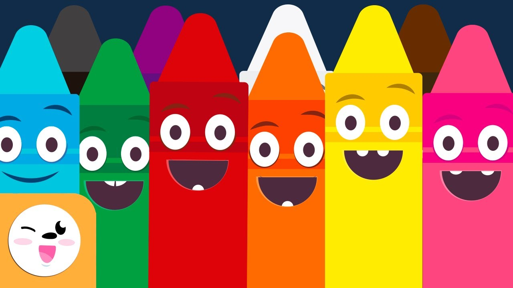

2. Los colores.
Al terminar esta lección, sabrás todo todo lo que necesitas saber sobre los colores en inglés: su significado en español, su pronunciación, escritura, vocabulario relacionado con los colores.

- Red = Rojo
- Blue = Azul
- Light blue = Azul claro
- Sky blue = Azul cielo
- Dark blue = Azul oscuro
- Yellow = Amarillo
- Green = Verde
- Light green = Verde claro
- Turquoise = Turquesa
- Orange = Naranja
- Violet = Violeta
- White = Blanco
- Black = Negro
- Gray = Gris
- Pink = Rosa
- Fuchsia = Fucsia
- Brown = Marrón
- Purple = Morado

INICIO